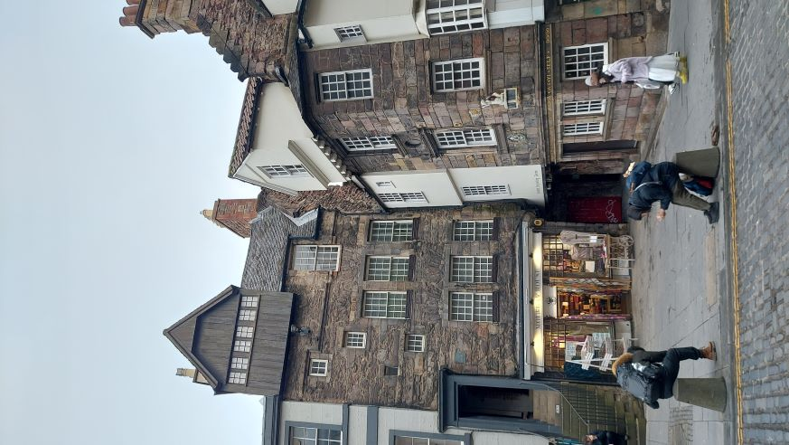
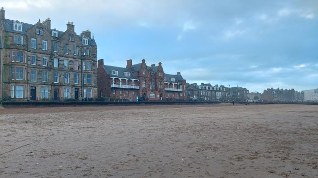

Історія Шотландії
Шотла́ндія — країна у Західній Європі, що належить до Сполученого королівства Великої Британії та Північної Ірландії. Колись незалежна держава. Займає північну частину Великої Британії, на півдні межує з Англією, на сході її береги омиває Північне море, на півночі й заході Атлантичний океан, на південному заході — Північна протока та Ірландське море.

Старе місто. Королівська миля
Королівська миля є одним з найбільш знакових туристичних центрів в Шотландії, з Единбурзьким замком на одному кінці і палацу Холіруд на іншому. Королівська миля – низка вулиць у серці Старого міста одночасно з Кастхилл, Лонмаркет, Хай Стріт і абатством Странд, в якому зараз проживає більше 70000 чоловік.
Пляж Портобелло
Загальна довжина пляжу – приблизно 3 кілометри. Уздовж узбережжя розташовані різноманітні кафе та бари, а також яхт-клуби, криті басейни з турецькою лазнею та ігрові зали. Щороку тут відбуваються вітрильні регати та інші спортивні змагання.
Дістатися до пляжу можна як на автобусі, так і пішки, і на шляху можна насолодитися прекрасними краєвидами. Нехай вода тут може бути холодною для купання, але споглядання та єднання з природою роблять це місце по-справжньому чарівним. Пляж Портобелло – це місце, яке варто відвідати, щоб відчути атмосферу місцевого життя та створити масу приємних спогадів.